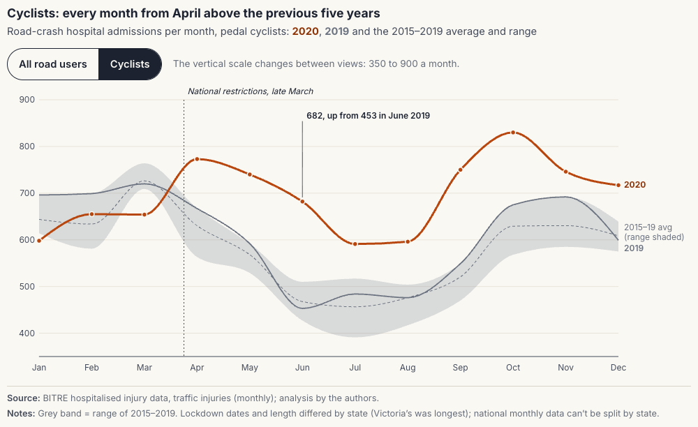
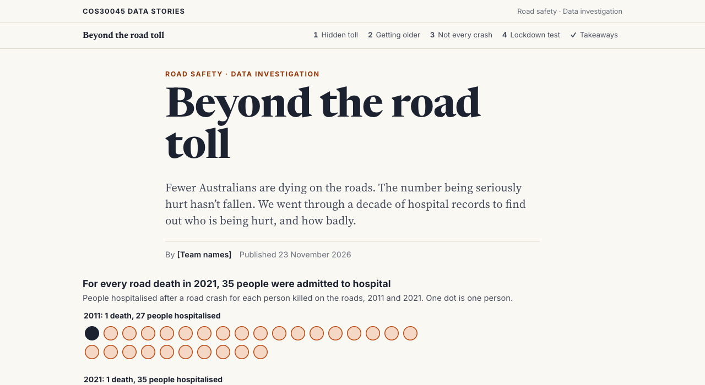
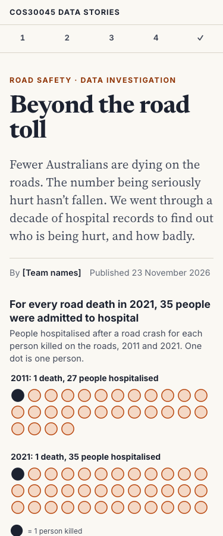
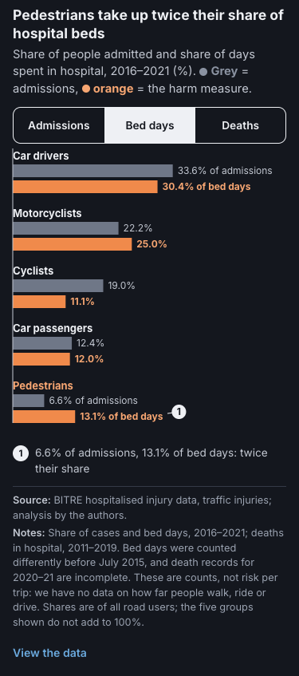
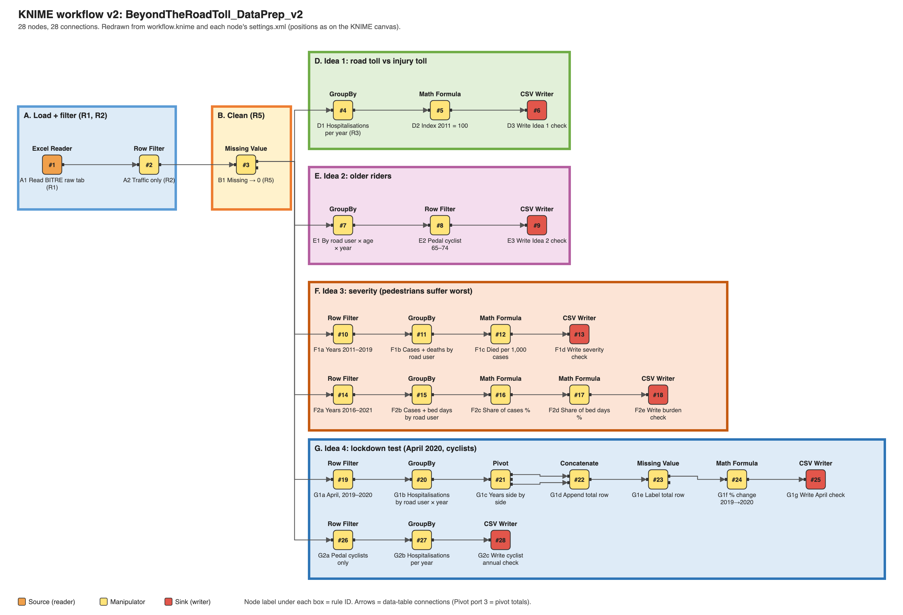
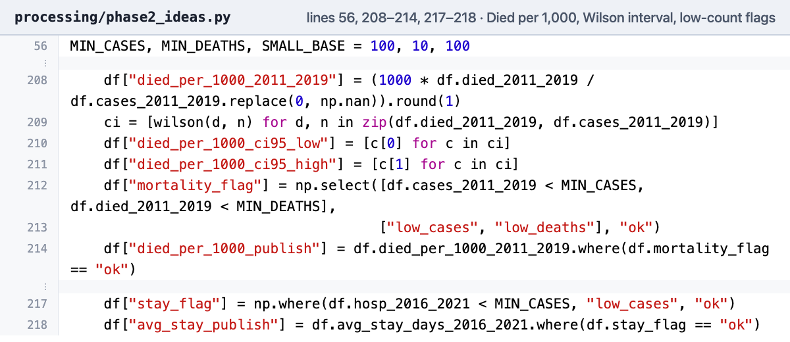
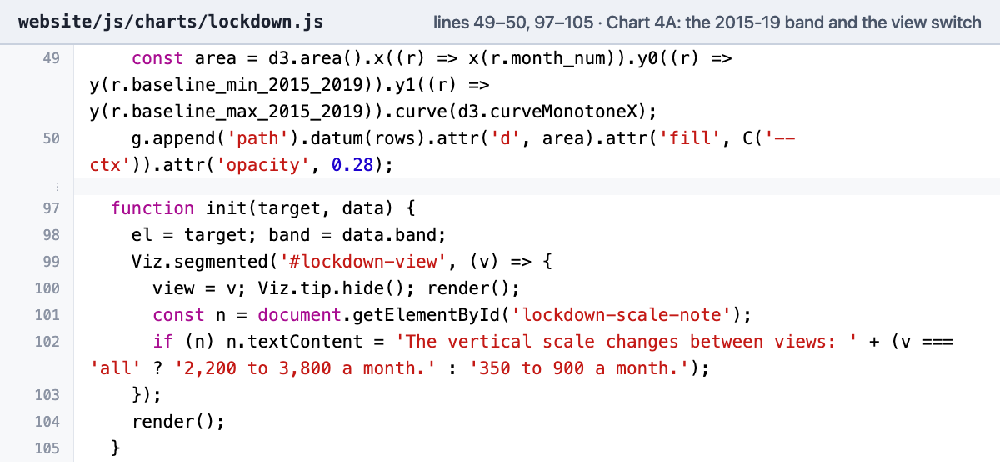

COS30045 Data Visualisation · Week 11 · Stand Up 2 (updated)
Beyond the Road Toll
Hospitalised road-crash injuries in Australia, 2011–2021. Four chapters: why deaths fall while serious injuries don’t, who is hurt worst, and what lockdown did to the roads.
Team Shu
Where we are
Stand Up 1 was the what. Today is the how — and the story grew from two chapters to four.
✓ Working D3 site: 11 custom charts, four chapters and a closing section
✓86,140 traffic rows cleaned in Python; 16 CSVs feed the site
✓New: Chapter 3 (severity) and Chapter 4 (the lockdown test)
Steppers: Admissions → Bed days → Deaths (3A); All road users → Cyclists (4A, the axis rescales and says so).
Toggles: Died per 1,000 / Average stay (3B); counts / per person (Ch 1–2).
Find yourself: pick road user and age, read one plain sentence.
Keyboard and touch: arrow keys, tap tooltips; nothing is hover-only. A data table sits behind every chart.
Reduced motion respected: same content, no animation.

Chart 4A after the switch to “Cyclists”.
Website design
A newspaper page, not a dashboard.
MastheadKey-points boxesPull statsSticky chapter barMethods boxDark modeWorks at 375 px

Desktop, 1280 px

Phone, 375 px

Phone, dark mode
Data pipeline
Every number on the page comes from one traceable path.
BITRE workbook117,919 raw rows
→
clean_data.pyTraffic only: 86,140 rows
→
phase2_ideas.pyrates, flags, trend
→
16 CSVscopied to the site
→
D3 chartsprose filled from data
National totals match BITRE’s published tables exactly (Phase 1).
Phase 2: 13/13 reconciliation checks PASS, including 538 of 2,041 deaths and April 3,488 → 2,357.
100 quotable numbers, each tied to a source CSV; 102/102 prose numbers filled from the data (data-fill).
Low-count rates are blanked in _publish columns; the charts only read those.
KNIME v2
A second tool, redoing the sums from the raw workbook.

28
nodes: v1’s 9 plus Idea 3 and Idea 4 branches
59/59
checks match the Python outputs
KNIME checks Python; it does not feed the site. Portable .knwf.
Code · Python
The rule is in the code: no rate without enough cases.

processing/phase2_ideas.py lines 56, 208–214, 217–218: flag below 100 cases or 10 deaths; only flagged-ok values reach the _publish column.
Code · D3
One small module per chart; the view switch just redraws.

website/js/charts/lockdown.js lines 49–50 and 97–105: the 2015–19 band, and the All / Cyclists switch.
What’s next, honestly
What is not done yet.
Usability testing with Sam-like users: think-aloud, task success, SUS. Not yet run.
Mercury deployment and the design-process write-up.
Licence version still to confirm.
Chapter 5 (equity) deferred: First Nations tables do not reconcile with national totals by more than suppressed cells explain, so we will not publish it.
Ask: does the Chapter 3 headline read as a claim you would trust? Anything unclear in Chapter 4’s trend caveat?
Backup
Sources and methods.
Sources: BITRE hospitalised injury data (Sept 2023); ABS estimated resident population; BITRE Australian Road Deaths Database (CC BY 3.0 AU).
Windows: deaths in hospital 2011–19 (2020–21 incomplete); bed days and stays 2016–21 (method changed July 2015).
Flags: rates shown only with at least 100 cases and 10 deaths; 95% Wilson intervals.
Breaks: Vic 2012 and NSW 2017 narrow counts, so rises are probably understated. State and residence, not crash location.
Trend: straight line on 2011–19, 95% prediction interval; no exposure data (km, trips).